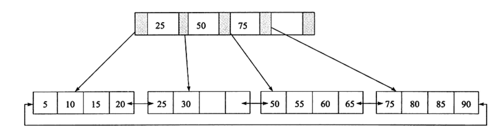
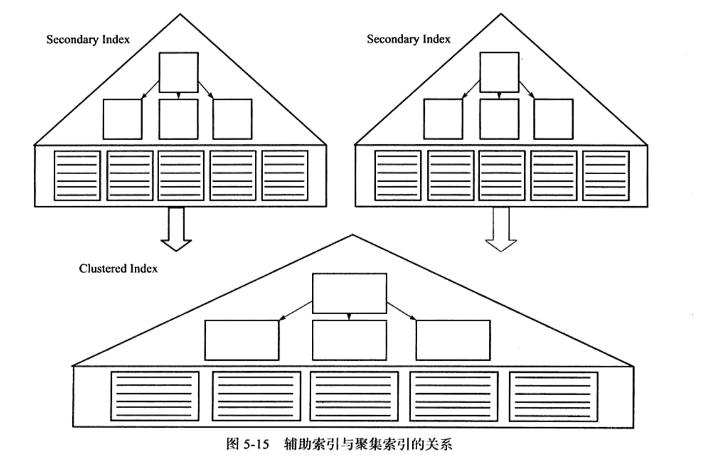

索引
在系统中，为了提高查询性能，
这里 主要记录 InnoDB存储引擎的索引，
InnoDB 支持一下几种常见的索引B+Tree索引全文索引Hash索引
为什么要有索引？
索引在MySQL中也叫做 键，是存储引擎用于快速找到记录的一种数据结构。索引对于良好的性能非常关键，
尤其是当表中的数据量越来越大时，索引对于性能的影响愈发重要。
索引优化应该是对查询性能优化最有效的手段了。索引能够轻易将查询性能提高好几个数量级。
索引的数据结构
任何一种数据结构都不是凭空产生的，一定会有它的背景和使用场景，我们现在总结一下，我们需要这种数据结构能够做些什么，其实很简单，那就是：每次查找数据时把磁盘IO次数控制在一个很小的数量级，最好是常数数量级。那么我们就想到如果一个高度可控的多路搜索树是否能满足需求呢？ –> B+树 应运而生。

叶子节点通过双向链表进行连接
B+Tree的查找过程

浅蓝色的块我们称之为一个磁盘块，可以看到每个磁盘块包含几个数据项（深蓝色所示）和指针（黄色所示），如磁盘块1包含数据项17和35，包含指针P1、P2、P3，P1表示小于17的磁盘块，P2表示在17和35之间的磁盘块，P3表示大于35的磁盘块。真实的数据存在于叶子节点即3、5、9、10、13、15、28、29、36、60、75、79、90、99。非叶子节点只不存储真实的数据，只存储指引搜索方向的数据项，如17、35并不真实存在于数据表中。
如图所示，如果要查找数据项29，那么首先会把磁盘块1由磁盘加载到内存，此时发生一次IO，在内存中用二分查找确定29在17和35之间，锁定磁盘块1的P2指针，内存时间因为非常短（相比磁盘的IO）可以忽略不计，通过磁盘块1的P2指针的磁盘地址把磁盘块3由磁盘加载到内存，发生第二次IO，29在26和30之间，锁定磁盘块3的P2指针，通过指针加载磁盘块8到内存，发生第三次IO，同时内存中做二分查找找到29，结束查询，总计三次IO。
真实的情况是，3层的b+树可以表示上百万的数据，如果上百万的数据查找只需要三次IO，性能提高将是巨大的，
如果没有索引，每个数据项都要发生一次IO，那么总共需要百万次的IO，显然成本非常非常高.
B+Tree 性质
索引字段要尽量的小(树的高度越低,IO次数就少):通过上面的分析，我们知道IO次数取决于b+数的高度h，假设当前数据表的数据为N，每个磁盘块的数据项的数量是m，则有h=㏒(m+1)N，当数据量N一定的情况下，m越大，h越小；而m = 磁盘块的大小 / 数据项的大小，磁盘块的大小也就是一个数据页的大小，是固定的，如果数据项占的空间越小，数据项的数量越多，树的高度越低。这就是为什么每个数据项，即索引字段要尽量的小，比如int占4字节，要比
bigint8字节少一半。这也是为什么B+Tree要求把真实的数据放到叶子节点而不是内层节点，一旦放到内层节点，磁盘块的数据项会大幅度下降，导致树增高。当数据项等于1时将会退化成线性表。索引的最左匹配特性(即从左往右匹配):当 B+Tree 的数据项是复合的数据结构，比如
idx_name_age_sex(name,age,sex)的时候，B+Tree 是按照从左到右的顺序来建立搜索树的，比如当(张三,20,F)这样的数据来检索的时候，B+Tree 会优先比较name来确定下一步的所搜方向，如果name相同再依次比较age和sex，最后得到检索的数据；但当(20,F)这样的没有name的数据来的时候，B+Tree 就不知道下一步该查哪个节点，因为建立搜索树的时候name就是第一个比较因子，必须要先根据name来搜索才能知道下一步去哪里查询。比如当(张三,F)这样的数据来检索时，B+Tree 可以用name来指定搜索方向，但下一个字段age的缺失，所以只能把名字等于张三的数据都找到，然后再匹配性别是F的数据了， 这个是非常重要的性质，即索引的最左匹配特性。
索引的类型
- B+Tree 索引(innoDB 默认支持的索引)
- Hash索引
hash类型的索引: 查询单条快，范围查询慢
B+Tree类型的索引: B+Tree,层数越多,数据量指数级增长（我们就用它，因为innodb默认支持它）
1 | #不同的存储引擎支持的索引类型也不一样 |
B+Tree 索引
B+Tree 索引 是 B+Tree 在数据库中的实现，但是 B+tree 索引在数据库中有一个特点是高扇出性，因此在数据库中， B+Tree 的高度一般在 2-4 层.
数据库中 B+Tree 索引一般可以分为 聚簇索引(cluster index) 和 辅助索引(secondary index),但是不管是聚簇索引还是 辅助索引，其内部都是B+Tree， 即高度平衡的，叶子节点存放着所有的数据。 聚簇索引 与 辅助索引不同的是叶子节点存放的是一整行的数据。
聚簇索引
InnoDB 存储引擎表是索引组织表， 即表中数据按照主键顺序存放。 而聚簇索引(cluster index)就是按照每张表的主键构造一颗 B+Tree 同时叶子节点存放的是整张表的行记录数据。也将聚簇索引的叶子节点称为数据页。聚簇索引的这个特性决定了索引组织表中数据也是索引表的一部分，同 B+Tree 数据结构一样，每个数据页都通过一个双向链表进行连接。
由于实际数据页只能按照一课B+Tree 进行排序，因此每张表只能有一个聚簇索引。 大多数情况下，查询优化器倾向于采用聚簇索引。因为聚簇索引能够在叶子节点上直接查找到数据。此外，由于定义了数据的逻辑顺序，聚簇索引能够很快的访问针对范围值的查询。查询优化器能够快速的发现这一范围的数据页需要扫描。
辅助索引
对于辅助索引(secondary Index), 叶子节点并不包含航记录的全部数据。 叶子节点除了包含键值以外，每个叶子节点的中的所银行中还包含了一个书签(bookMark)。 该 bookMark 用来告诉InnoDB 存储引擎可以在哪里找到与索引相对应的行数据。由于INnoDB存储引擎表是索引组织表，因此 InnoDB 存储引擎的辅助索引的书签就是相应的行数据的聚簇索引键。
下图显示了 InnoDB中 聚簇索引 与 辅助索引的关系。

辅助索引的存在并不影响数据在聚簇索引中的组织，因此每张表中可以有多个辅助索引。
当通过辅助索引来寻找数据时，InnoDB存储引擎会遍历辅助索引并通过叶子级别的指针获得主键索引的主键，然后通过主键索引找到一个完成的行记录。
假设辅助索引树高3层，聚集索引树为3层，那么根据辅助索引查找数据，需要先经过3次IO找到主键，再经过3次IO找到行做在的数据页，共6次
联合索引
本质上说 联合索引内部也是一棵B+Tree ，不同的是联合索引的键值数量不是1 而是 >=2.
最左匹配原则
覆盖索引 (Covering index)
即 通过辅助索引中就可以查询到记录，而不需要通过聚簇索引。
使用覆盖索引的好处是辅助索引不包含整行记录的所有信息，故其大小远小于聚簇索引，因此可以减少大量的IO操作
- 从辅助索引中直接获取记录
- 对于统计操作，例如count(1)，有可能联合索引，右边也会匹配（优化器自己会做），因为count(1)操作不需要获取整行的详细数据，所以不需要去聚集索引的叶子节点去获取数据，直接在辅助索引树中就完成了操作
- select username from xxx where username=’lisi’，如果username是辅助索引，那么整个查询在辅助索引树上就可以完成，因为辅助索引树上虽然没有保存完整的行，但是保存着<username,lisi>这个key-value对；如果select username, age from xxx where username=’lisi’，那么就要走聚集索引了
Hash 算法
Hash 算法是一种常见的算法，时间复杂度为 O(1), 每个数据库应用中都存在这种数据库结构。
对于可能产生的 Hash碰撞， mysql 采用链表的方式解决。
全文检索
由于 B+Tree 索引的特点， 可以通过索引字段的前缀(prefix)进行查找。1
2# 如下语句 B+Tree 索引是支持的
SELECT * FROM blog WHERE content like 'xxx%'
MySQL5.6版本开始支持 InnoDB引擎 的全文索引，语法层面上大多数兼容之前 MyISAM s的全文索引模式。所谓全文索引，是一种通过建立倒排索引，快速匹配文档的方式。
1 | # 创建全文索引 |
详细了解: InnoDB 全文索引简介
倒排索引
全文检索通常使用倒排索引(inverted index)实现。倒排索引同 B+Tree 索引一样，也是一种索引结构。他在辅助表中存储了单词与单词自身在一个或者多个文档中所在位置之间的映射。这种关联关系通过关联那数组实现。